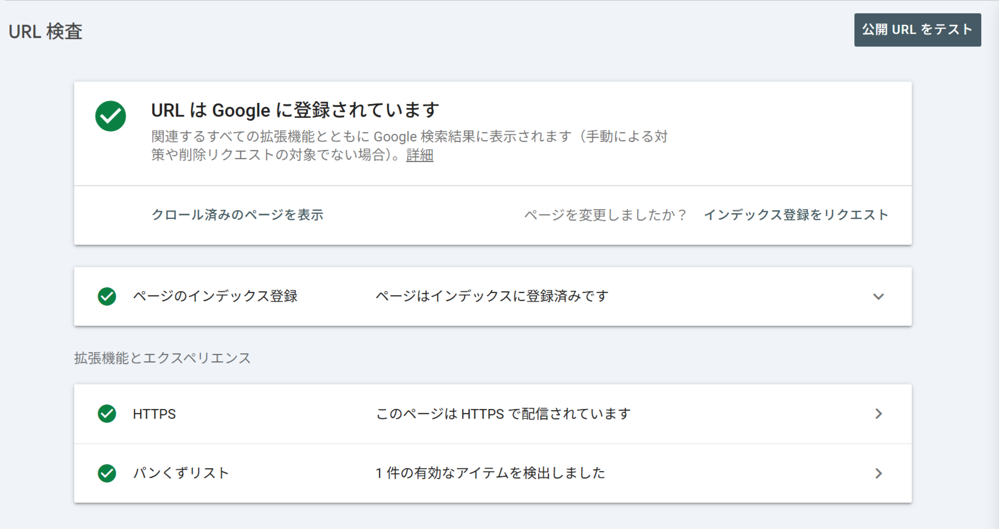

🕒 学習目安 約18分
Search Console（基礎）
登録：所有権確認、インデックス：URL検査、把握：全URLリストの作成、クロール・レンダリングの健全性確認
4 / 7
インデックス：URL検査ツール
Search ConsoleのURL検査ツールを使うと、特定のURLが現在Googleにどう認識されているかを個別に確認できます。
Term / 用語定義
URL検査ツール
指定したURLについて、インデックス登録されているか、登録されていない場合はその理由、モバイル対応の状況、構造化データの検出状況などを確認できるSearch Consoleの機能。

図：URL検査ツールの結果画面。指定したURLがインデックス登録済みか、HTTPSやパンくずリストの状態などを個別に確認できる
URL検査ツールで確認できる主な情報は次のとおりです。
- そのページが現在インデックスに登録されているかどうか
- インデックスされていない場合、その原因（クロールされていない、robots.txtでブロックされている等）
- 最後にGooglebotがそのページをクロールした日時
- ページで検出された構造化データ（後の章で学びます）の有無
📝
Note
新しく公開したページや、大きく内容を更新したページについて、URL検査ツールから「インデックス登録をリクエスト」することもできます。ただし、リクエストしたからといって必ずすぐにクロール・インデックスされるとは限りません。